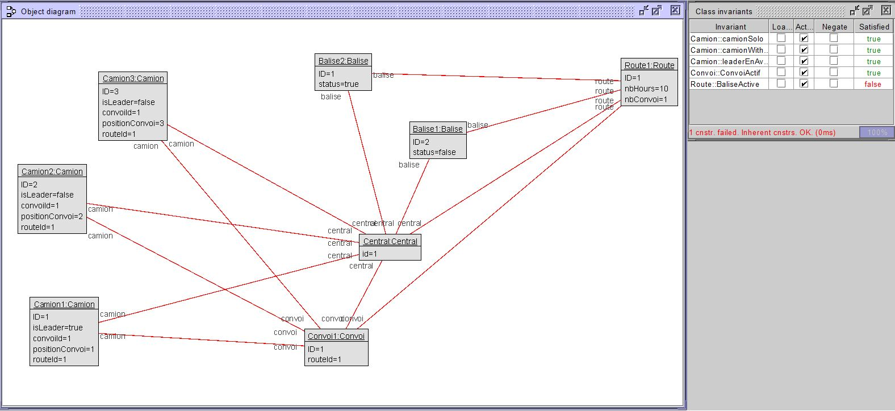

| Invariants | Détails |
|---|---|
|
Camion seul On vérifie qu'un camion seul (convoiId = 0 ou undef), a une route associée. |
|
Camion dans un convoi Ici on vérifie que le id d'un convoi se propage dans la propriété convoiID des camions qui lui sont associés. (la propriété routeID n'est pas nécessaire pour un camion dans un convoi) |
|
Le leader devant Ici, l'objectif est de vérifier si la position des camions dans le convoi fait du sens. C'est-à-dire, le leader en premier et les autres ensuite. |
|
Convoi Actif Le rôle de cet invariant est de s'assurer que chacun de nos convois contient un minimum de 2 camions et qu'au moins l'un d'entre eux est un leader. |
|
Balise active Pour qu'une balise soit autorisée dans une route, celle-ci doit être fonctionnelle. Cet invariant vérifie que toutes les balises ont un status "Online".  |